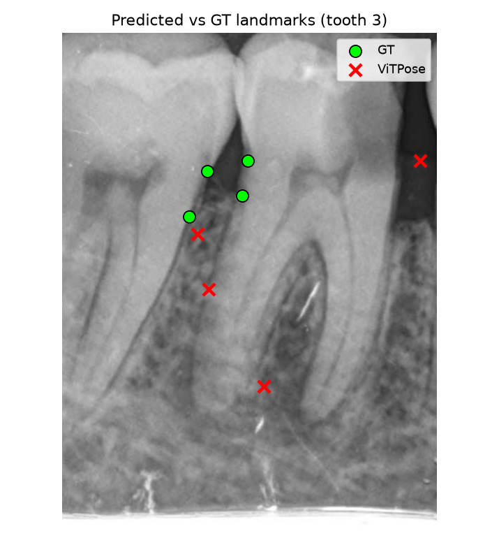
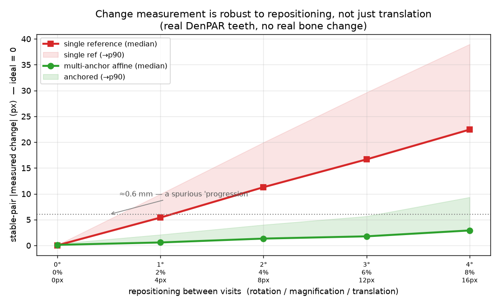

Ready to inspect
Research code, API, tests, safe file ingest, visual evidence, and reproducible fixture smoke tests.
Dental evidence, not an AI guess
ToothPrint reads the dentition three ways: identity from a scan or radiograph, longitudinal bone-level change, and regional 3D surface change. Every verdict is paired with an uncertainty interval and an explicit abstain state.


Current status
Research code, API, tests, safe file ingest, visual evidence, and reproducible fixture smoke tests.
Real multi-session validation, site recalibration, governance, and regulatory clearance before patient-affecting use.
Shows the evidence, reports uncertainty, and abstains when the measurement is outside the validated regime.
Start where you are
Local analysis, no unattended decision, explicit uncertainty.
Visit-to-visit change evidence and a reportable certificate.
File safety, auditability, validation gap, and deployment limits.
Conformal guarantees, ablations, datasets, and reproducibility.
Library, FastAPI service, desktop shell, and hardened loaders.
Visual evidence
These are ToothPrint outputs, not stock medical imagery. They show the actual information the system uses: geometry, landmarks, registration error, and certificate thresholds.


Identity certificate
A fresh arch is aligned to each enrolled reference. The genuine arch sits on the surface; a stranger's best fit still floats away. Under missing teeth, learned point correspondence replaces brittle rigid matching.
Change certificate
ToothPrint measures recession differentially instead of trusting raw landmark displacement. The certificate fires only when the conformal interval clears the clinical threshold.

Surface certificate
The surface certificate subtracts reconstruction-noise power and evaluates regions, so a local lesion is not diluted by a whole-surface average.

Interactive certificate
Move the measured change. Stable and changed findings require the whole interval to sit on the correct side of the threshold; the middle is an intentional abstain state.